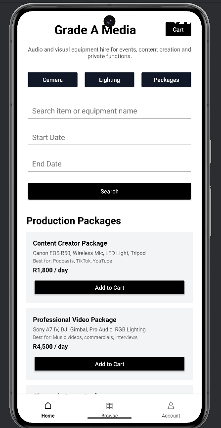
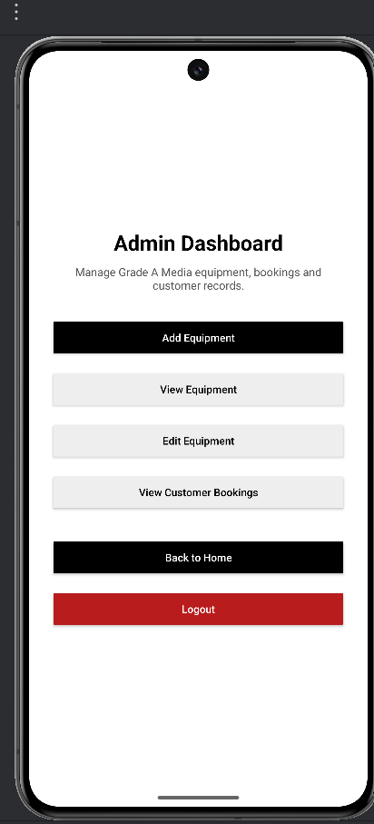
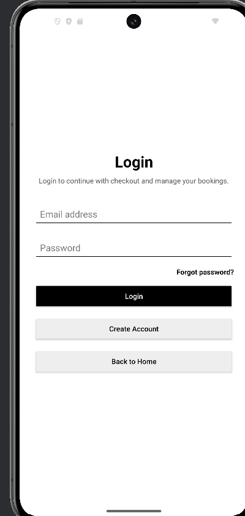

Login walkthrough
Shows the login process and how the user enters the application.
Android project
A mobile booking application created for a media equipment rental business. I worked as the project manager and main developer, handling the project documentation, code implementation, code fixes, testing, walkthrough evidence and the main application flow.
Grade A Media needed a more organised way to manage the booking process for media equipment and services. Instead of relying only on manual communication, the business needed an app where users could browse items, search, add items to a cart, check out and move through the booking process more clearly.
The Grade A Media Booking Application was developed as an Android mobile app using Java, XML layouts and Firebase. The app includes user-facing screens, login flow, browsing and searching, cart functionality, checkout flow, validation and admin-related features.
The goal was to make the booking process easier to follow while also showing proper mobile app structure, screen navigation, data handling and project documentation.
Users can access the application through a login process before moving into the main app screens.
Users can browse available items and use search functionality to find what they need faster.
Selected items can be added to a cart so users can review them before continuing to checkout.
The app includes a checkout flow that guides the user through the final booking steps.
Firebase was used as part of the application’s data and backend setup.
The app includes validation checks and was tested through walkthrough videos to show the main user flows.
I served as the project manager for the Grade A Media Booking Application. I organised the project work, planned the deliverables, managed the documentation and made sure the final submission was properly structured.
I also handled the main development work for the app. This included building and fixing code, working on Android screens, user flows, navigation, validation, Firebase-connected functionality, testing and debugging.
My role involved both technical and project management responsibilities. This helped me improve my coding ability, documentation skills, problem-solving, planning and ability to complete a working software project under deadlines.
This project improved my understanding of Android development, Java app logic, XML layouts, Firebase, user input validation, screen navigation, testing and debugging. It also taught me how important it is to keep project documentation clear and to show a working application properly through walkthrough videos.
Project evidence
These videos show the main parts of the application in action. They are useful as project evidence because they show the app being used instead of only describing the features.
Shows the login process and how the user enters the application.
Shows how users browse items and search inside the application.
Shows how selected items are added and reviewed in the cart.
Shows the checkout process and the final booking steps.
Shows the overall application flow and how the main features connect together.
This project was completed as an academic group project, where I took on the project manager role and carried a major part of the development and documentation work. The walkthrough videos and screenshots are included to show the working application features and the final system flow.
Screenshots
These screenshots show key screens from the Grade A Media Booking Application, including the customer browsing screen, login screen and admin dashboard.


